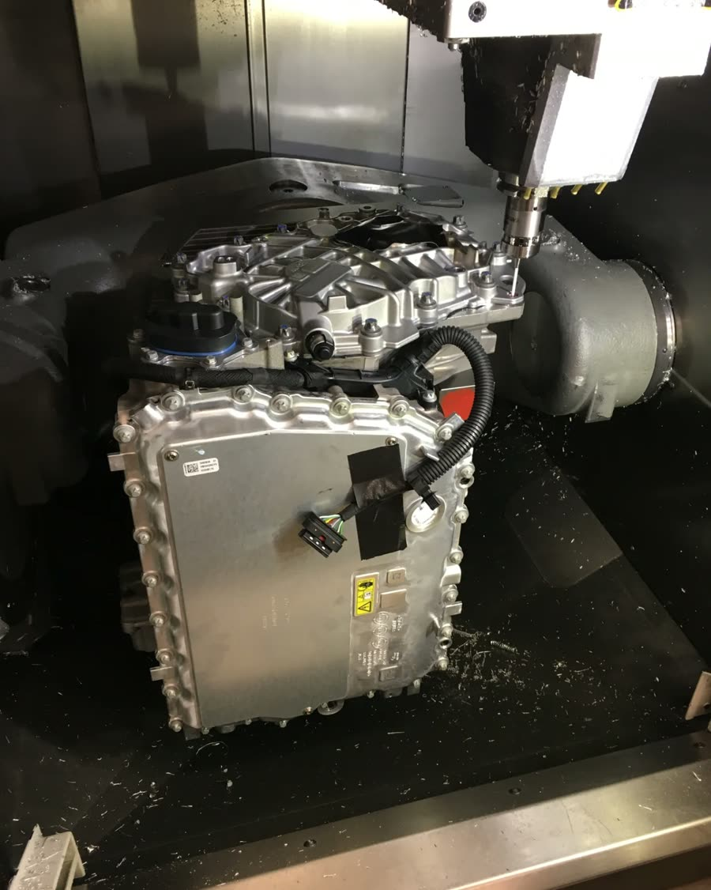
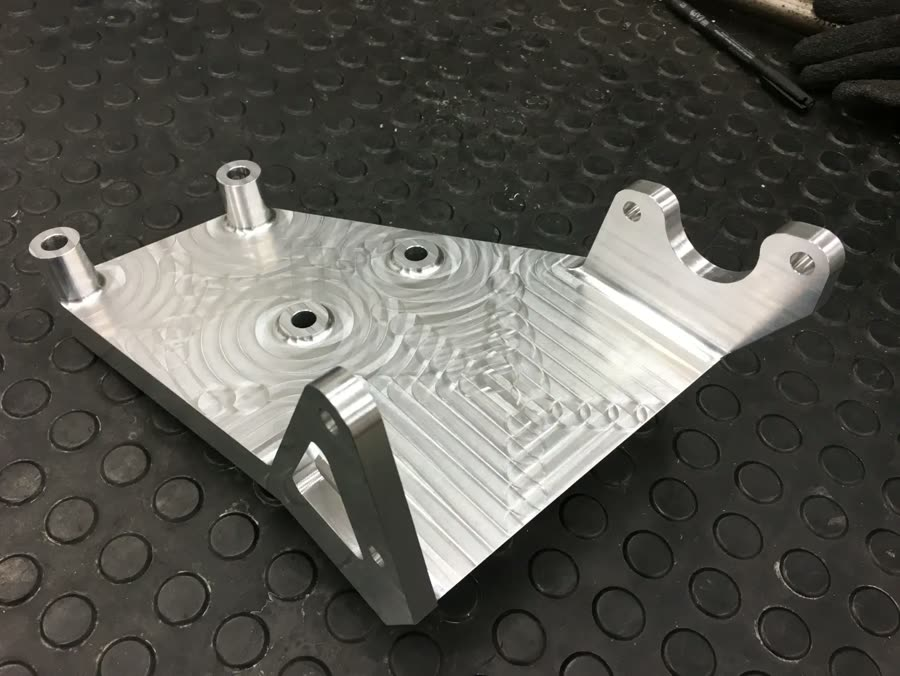
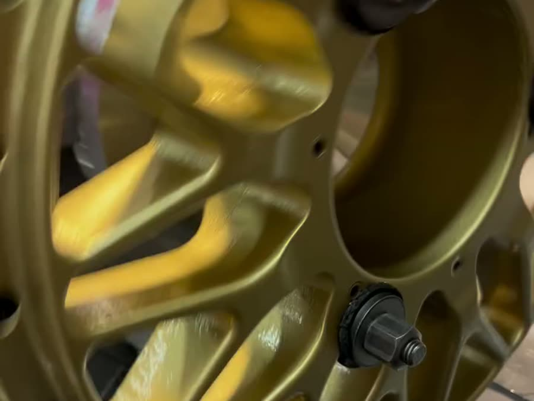
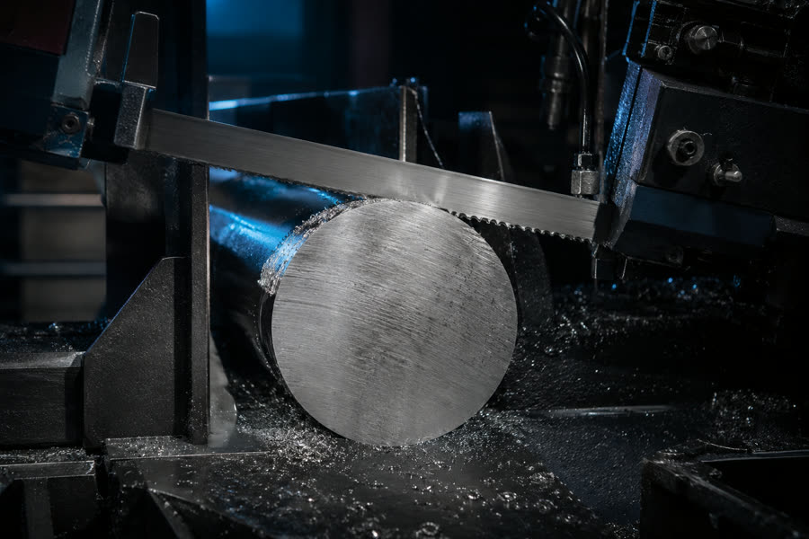
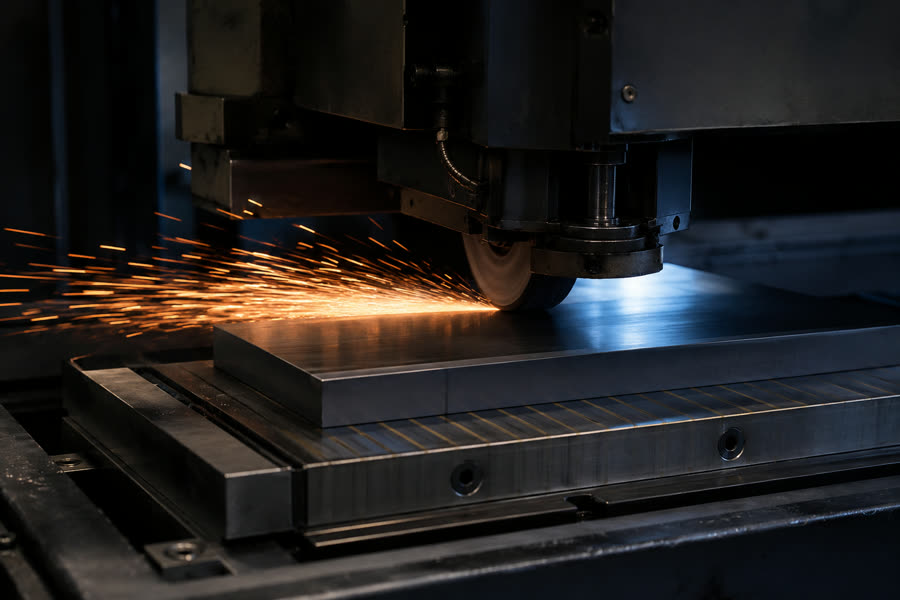
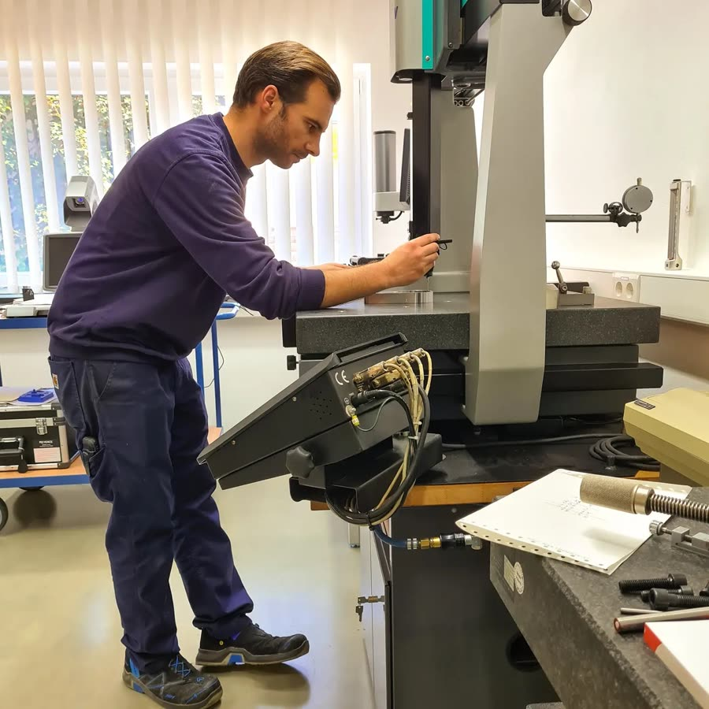

01
Drehen
CNC- und konventionelles Drehen bis Ø 250 × 450 mm
Zwei CNC-Drehmaschinen und zwei konventionelle Maschinen für Prototypen, Einzelteile, Reparaturen und Kleinserien — wirtschaftlich ab Stückzahl 1.
CNC-Zerspanung · Essenbach · seit 1984
Präzisions-Dreh- und Frästeile aus Essenbach bei Landshut. Vom Prototyp über Einzelteile nach Zeichnung bis zur Kleinserie — wir fangen da an, wo andere aufhören.
Unser Anspruch
Seit 1984 fertigt die Paul Walczok GmbH Präzisionsteile nach Zeichnung, Muster oder Datensatz — auch aus schwer zerspanbaren Werkstoffen wie Kovar, Molybdän oder Wolfram-Lanthan. Vom Einzelteil bis zur kompletten Baugruppe inklusive Montage: kurze Wege, feste Ansprechpartner und Chefkontrolle bei jedem Produkt.
Keyence XM 1000, Etalon 3D-Messtechnik und Härteprüfung — auf Wunsch mit Messprotokoll zu jedem gefertigten Bauteil. Qualität, die Sie schwarz auf weiß bekommen.
Qualität anfragen01
CNC- und konventionelles Drehen bis Ø 250 × 450 mm
Zwei CNC-Drehmaschinen und zwei konventionelle Maschinen für Prototypen, Einzelteile, Reparaturen und Kleinserien — wirtschaftlich ab Stückzahl 1.
02
3- und 5-Achs-Bearbeitung auf Hermle-Zentren
Vier Hermle-Bearbeitungszentren: zweimal 3-Achs bis 800 × 600 mm, zweimal 5-Achs bis 600 × 400 mm — komplexe Geometrien präzise in einer Aufspannung.
03
Prüfkörper nach DIN 50 125
Rund-, Flach- und Kerbschlagbiegeproben für Prüfinstitute und Materialprüfung — auch aus anspruchsvollen Werkstoffen wie Kovar, Molybdän oder Wolfram-Lanthan.
Zuhause in anspruchsvollen Branchen
Maschinenpark
Vom Zuschnitt bis zum Messprotokoll: Unsere Fertigung in der 2013 bezogenen Produktionshalle deckt die komplette Prozesskette ab.

Fräsen2× Hermle 5-Achs mit 600 × 400 mm Verfahrweg — für komplexe Bauteile in einer Aufspannung.

Fräsen2× Hermle 3-Achs mit 800 × 600 mm Verfahrweg — wirtschaftlich bei Platten- und Serienteilen.

Drehen2× CNC bis Ø 250 × 450 mm plus zwei konventionelle Maschinen für Einzelteile und Reparaturen.

SägenVier Bandsägen bis Ø 600 mm und Alukreissäge — präziser Zuschnitt als Basis jeder Fertigung.

OberflächeRund- und Flachschleifen, Gleitschleifen und Strahlen — für Maßhaltigkeit und Oberflächengüte.

MessenKeyence XM 1000, Etalon 3D, Tesa, Mahr und Härteprüfung — dokumentiert im Messprotokoll.
Zeichnung, Muster oder Datensatz — wir melden uns kurzfristig mit einer ehrlichen Einschätzung und einem klaren Angebot.
Jetzt anfragenIhre Vorteile
Kurze Wege, schnelle Entscheidungen und ein Qualitätsanspruch, der keine Kompromisse kennt — dafür steht ein Familienbetrieb in zweiter Generation.
Schlanke Prozesse und direkte Kommunikation — vom Angebot bis zur Auslieferung.
Reservierte Maschinenzeiten für dringende Projekte. Wenn es schnell gehen muss, sind wir bereit.
Jedes Produkt wird vor der Auslieferung persönlich geprüft — ohne Ausnahme.
Dokumentierte Qualität auf Wunsch: Messprotokoll zu jedem gefertigten Bauteil.
Karriere
Keine Schichtarbeit, attraktives Gehalt und moderne Arbeitsräume — ein Familienbetrieb mit Zukunft in Essenbach.
Jetzt bewerbenKontakt
Schildern Sie uns Ihre Anforderung — wir antworten kurzfristig mit einer passgenauen Lösung.